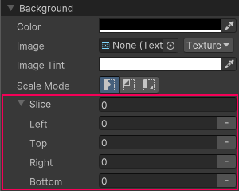

Generally, you can apply the 9-slice technique to a regular 2D Sprite. However, with UI(User Interface) Allows a user to interact with your application. Unity currently supports three UI systems. More info See in Glossary Toolkit, you can apply the 9-slice technique to Texture, Render TextureA special type of Texture that is created and updated at runtime. To use them, first create a new Render Texture and designate one of your Cameras to render into it. Then you can use the Render Texture in a Material just like a regular Texture. More info See in Glossary, and SVG Vector images.
To apply the 9-slice technique to an image:
For a SpriteA 2D graphic objects. If you are used to working in 3D, Sprites are essentially just standard textures but there are special techniques for combining and managing sprite textures for efficiency and convenience during development. More info See in Glossary image, use Sprite Editor or USS.
To apply the 9-slice technique to a selected image with USS:
Open UI Builder.
In the Background section in the InspectorA Unity window that displays information about the currently selected GameObject, asset or project settings, allowing you to inspect and edit the values. More info See in Glossary, specify the Left, Right, Top, and Bottom slice values.

Slice options in UI Builder
You can also specify the slice values directly in USS, UXML, or C# files for the following properties:
-unity-slice-left
-unity-slice-right
-unity-slice-top
-unity-slice-bottom
-unity-slice-scale
Important:
Slice values set with USS apply only to the image in the associated visual elementA node of a visual tree that instantiates or derives from the C# VisualElement class. You can style the look, define the behaviour, and display it on screen as part of the UI. More info See in Glossary. The values don’t apply to the same image used in other visual elements, in other UI documents, or in a sceneA Scene contains the environments and menus of your game. Think of each unique Scene file as a unique level. In each Scene, you place your environments, obstacles, and decorations, essentially designing and building your game in pieces. More info See in Glossary.
Unset slice value is zero. For example, if you set the Top, Bottom, and Right slice attributes but leave the Left slice empty, the Left slice is zero.
Slice values set in USS override slice values set in the Sprite Editor. For the example above, no matter what value you added to the Left slice in the Sprite Editor, the Left slice value is zero.